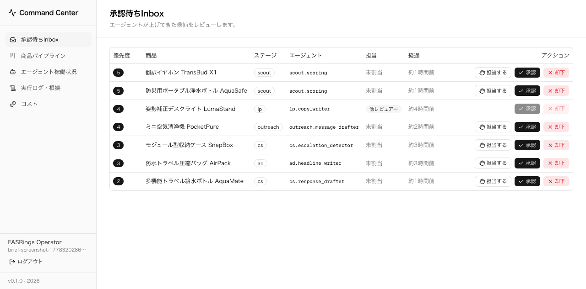
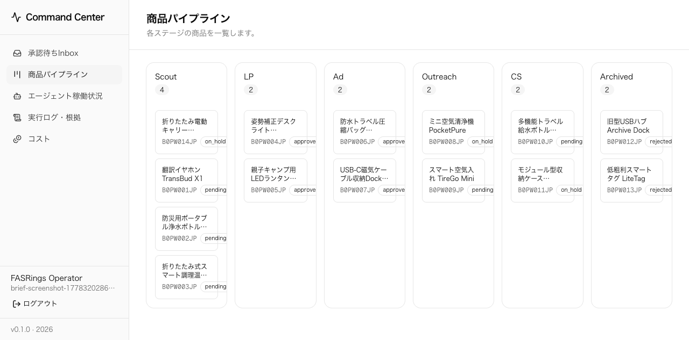
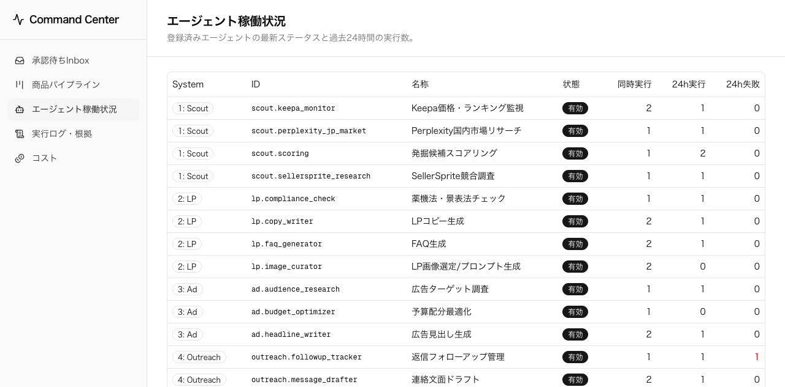
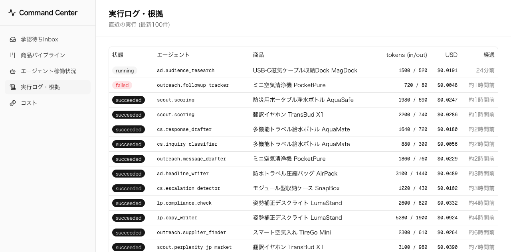
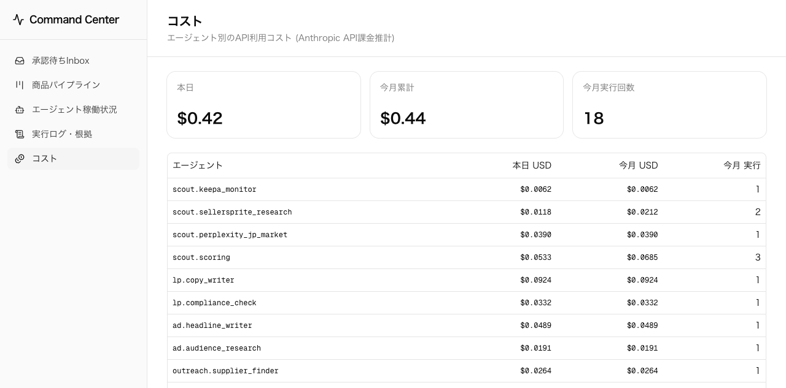

商品発掘から販売運用までを、AIエージェントで回す商流システム
候補商品の収集、国内市場チェック、LP/広告/メーカー連絡/CS返信の下書き、人間承認、実行ログ、コスト管理までを1つの運用画面に集約する。
FASRingsは、少人数で複数の商品案件を同時に進めるための運用OSです。
商品ビジネスで最も重いのは「候補を見る」「売れる理由を言語化する」「出す前に危険を潰す」「公開後に回す」という人間の判断作業です。 このシステムでは、AIエージェントが判断材料と下書きを作り、人間が採否・公開・送信だけを高速に決める形へ寄せます。
このシステムで、商品候補を売上に変える流れ
候補発掘
海外CF、ECデータ、国内需要をエージェントが収集。候補を自動でDB化。
採算・リスク判定
競合価格、粗利、法規制、壊れやすさ、販売訴求をスコア化。
人間レビュー
Inboxで採用/保留/却下を判断。無駄な調査や制作を早めに止める。
販売素材生成
LP、FAQ、広告コピー、画像方針、メーカー連絡文をAIが下書き。
CF公開・広告運用
Makuake等で初期需要を検証し、広告・CSを回しながら改善。
EC継続販売
反応が良い商品をShopify等へ展開。レビューとCSを次の商品選定へ戻す。
探索コストを下げる
人間が一つずつ調べる前に、エージェントが候補を絞る。低粗利・競合過多・規制リスクのある商品を早く落とします。
販売準備を速める
LP、広告、FAQ、連絡文面を同時生成し、レビュー待ちへ集約。商品が決まってから公開準備までの待ち時間を縮めます。
勝ち筋を再利用する
承認/却下、広告反応、CS理由を蓄積し、次の候補選定・訴求・仕入れ交渉に戻すことで学習する運用にします。
どのエージェントが何を担当するか
現在は17のエージェント定義を登録済みです。まずはサンプルデータでUIとワークフローを通し、次に本エージェントを接続して実データを流します。
Scout
LP
Ad
Outreach
CS
現在のフロントには、サンプル運用データを入れて実際の流れを再現しています。
`Agent Command Center` は、AIエージェントから上がる判断待ちを1つのInboxに集約します。 ここで人間が「担当する」「承認」「却下」を行い、次工程へ進めるか止めるかを決めます。
| 表示されているもの | 意味 |
|---|---|
| 翻訳イヤホン / 浄水ボトル | Scoutが発掘し、採用判断待ちの商品候補 |
| LumaStand / AirPack | LPや広告案のレビュー待ち |
| PocketPure / AquaMate | メーカー連絡・CS対応のレビュー待ち |
| 優先度 | 高いものから人間が処理するための順番 |

承認待ちInbox。AIが出した候補や生成物を、人間の承認ゲートへ集約する。
商品はステージごとに進み、止めるべき案件は早く止めます。

商品パイプライン。Scout、LP、Ad、Outreach、CS、Archived の各ステージを一覧する。
この画面は、FASRingsが「今どの商品に時間とお金を使っているか」を見る場所です。 売れそうな候補だけを次工程に流し、粗利が低い・競合が強い・リスクが大きいものはArchivedへ落とします。
Scout
商品発掘・一次スコア
LP
訴求・FAQ・表現確認
Ad
広告コピー・ターゲット
Outreach
仕入れ先開拓・交渉文面
CS
問い合わせ・交換・返金対応
Archived
見送り理由を残して再利用
エージェントの稼働数、失敗数、実行コストを見ながら増やします。

登録済みエージェントの一覧。どの工程に何体いるか、24時間で動いたかを確認する。

実行ログ。どの商品に、どのエージェントが、いくら使って、何を出したかを追う。
AIを使うほど、コストを見える化する必要があります。

コスト画面。現状は `agent_runs` の推計コストを集計。今後provider別に分解する。
候補探索の件数を増やすほど、Claude、Perplexity、Keepa、SellerSprite、Apify、Make.comなどの利用費が積み上がります。 そのため、FASRingsでは「商品1件を次の判断まで進めるのにいくらかかったか」を見えるようにします。
| 管理したいコスト | 目的 |
|---|---|
| 調査コスト | 候補1件あたりの発掘・国内調査費を把握 |
| 生成コスト | LP/広告/CS生成に使ったトークンとAPI費を把握 |
| 外部API費 | Keepa、SellerSprite、Perplexity、Apify等をprovider別に把握 |
| 案件別コスト | 商品ごとの粗利見込みと事前調査費のバランスを見る |
この後の実装予定: サンプル運用から、本エージェント稼働へ
UIとDBの土台
Next.js管理画面、Supabase Auth、Drizzle schema、サンプル運用データ、17 agents定義を用意済み。
本エージェント接続
Scout、国内調査、LP、Ad、Outreach、CSの実ジョブを `agent_runs` と `approval_queue` に書き込ませる。
24/7常駐
Mac miniでワーカーを常駐。定期巡回、生成、通知、失敗リトライ、ログ保存を回す。
Lark / Make連携
Lark Baseを人間の台帳に、Postgresを実行ログに分け、Make.comや各APIとの接続を増やす。
まず入れるデータ
商品候補、国内競合、粗利、規制リスク、メーカー候補、LP/広告下書き、CS問い合わせ。
人間が見る場所
採用判断、LP採択、広告採択、メーカー送信、返金/交換/法務リスク対応。
自動化する場所
収集、要約、比較、下書き、リマインド、ログ保存、コスト集計、通知。
日次運用は、Inboxを処理するだけで次工程が動く形に寄せます。
朝: 候補を見る
Scoutが夜間に拾った候補を確認。高スコア商品だけ採用し、低粗利や規制リスクはすぐ落とす。
昼: 素材を決める
LP案、広告案、FAQ、画像方針をレビュー。採用された案だけを制作・公開準備へ進める。
夕方: 外部連絡とCS
メーカー打診文、フォローアップ、CS返信案を確認。送信前の人間承認を必ず挟む。
週次で見るもの
採用率、Archived理由、案件別コスト、LP/広告の採択理由、メーカー返信率、CSの問い合わせ傾向。
月次で見るもの
候補数、採用案件数、公開準備中案件、CF/EC売上、粗利見込み、AI/API/広告前コストの回収状況。
現状と、この後に越えるべきゲート
| 領域 | 現状 | 次にやること | 完了条件 |
|---|---|---|---|
| フロント | Inbox / Pipeline / Agents / Runs / Cost を実装済み | 商品詳細、根拠表示、承認後の次工程遷移を追加 | 1商品を採用してLP/広告/Outreachへ流せる |
| データ | サンプルデータで運用フローを再現 | 実商品候補、国内競合、粗利、規制リスクを投入 | 実データがInboxとPipelineに出る |
| エージェント | 17 agents定義を登録済み | 本エージェントを `agent_runs` / `approval_queue` に接続 | 夜間に候補が増え、朝Inboxに並ぶ |
| 常時稼働 | ローカル開発環境で検証 | Mac miniでpm2/launchd常駐、ログ監視 | 24時間稼働し、失敗ログが見える |
| 外部連携 | Supabase中心。Lark/Makeは追加予定 | Lark Base同期、Make.com、Keepa、SellerSprite、Perplexity等 | 人間台帳とAI実行ログが同期する |
FASRingsは、商品ビジネスの「判断待ち」を1つの画面へ集め、回転数を上げる仕組みです。
現状
管理画面、DBスキーマ、認証、サンプル運用データ、17 agents定義、スクショ取得まで完了。
次の実装
本エージェントを接続し、実商品候補を夜間に収集、朝にはInboxで採否判断できる状態へ進める。
収益への変換
勝てる候補だけに制作・仕入れ・広告前コストを集中し、CF公開とEC継続販売へつなげる。